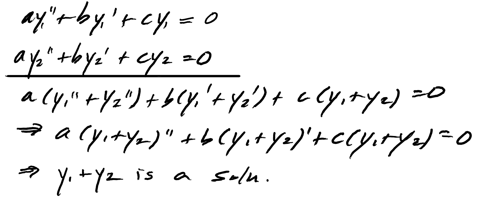
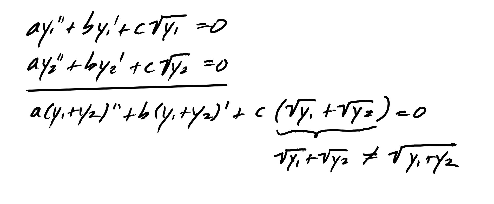
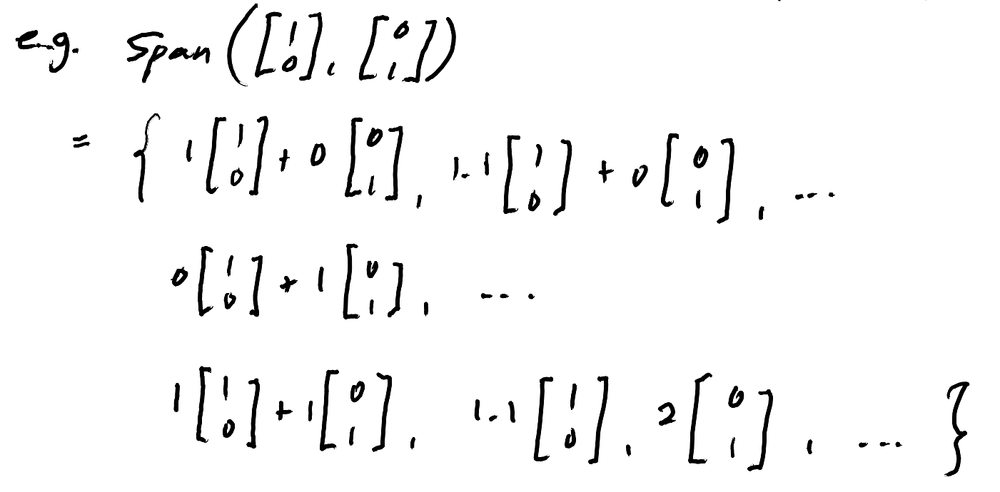
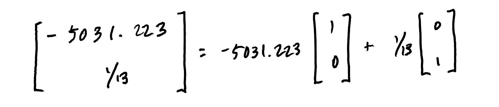

WEBSITE
HOME BACK
A concept we use constantly in physics: given a linear, homogenous differential equation, a basis set exists which can generate all possible solutions to the diffeq via linear combination of its elements. I had been feeling shaky about the origins of this statement, but I knew this derived from linear algebra stuff I had seen before, so I am using this to trace its origins. Now I feel more stable and hopefully the reader will too. This concept, named, is the
superposition principle: If $y_1$ and $y_2$ are two solutions to a linear, homogenous diffeq, then so is $y_1 + y_2$.
For example, consider the equation $ay'' + by' + cy = 0$, where $a, b, c$ are scalars.

With this logic, one can then see then why if the equation were nonlinear or inhomogenous why the superposition principle no longer holds. For example, consider instead $ay'' + by' + c \sqrt{y} = 0$:

It's not too hard to see why the superposition principle works, but the main question of this writeup is: why does there exist a basis set that can generate all possible solutions? For that we will need to make a
Digression: Vector Spaces
First off, what is a basis? We'll have to establish some preliminary defintions to work up to it.
Definition. The set $V$ is a vector space iff it satisfies some axioms. I won't list them all, but basically we want vector addition and scalar multiplication to be defined and act normal. See ___ for the list. Colloquially, it is a set of objects that you can add/substract each other with, and that you can multiply scalars to. For simplicity and practicality, lets treat these vector-objects as what we normally think of as a vector: an n x 1 matrix.
aside: the axioms for vector spaces look similar to those of a field, but they're not the same. The field axioms only use elements of the field, whereas the vector space axioms use vectors and elements of a field (the scalars). So, fields are the more fundamental system, and vector spaces use fields to construct themselves.
q: I thought that the scalars would have to all be real numbers, but turns out they can be complex. How do you define what the scalars for vector spaces are, and how does their nature affect how the vector space "works," if at all? Since I'm ambiguous on this, I'll just treat all of my scalars as only real, which is what the textbook I am studying does. This is not a trivial omission, however, because we use complex superpositions a lot in even in the most basic quantum mechanics problems.
todo: figure out complex scalar case
Definition. Given $\mathbf{v_1, ... v_n} \in V$, and $\alpha_1, ... \alpha_n \in S$,
\[
\alpha_1 \mathbf{v_1} + ... + \alpha_n \mathbf{v_n}
\]
is called a linear combination of $\mathbf{v_1, ... v_n}$. The set of all linear combinations of $\mathbf{v_1, ... v_n}$ is called the span of
$\mathbf{v_1, ... v_n}$.

Definition. In general, given $\mathbf{v_1, ... v_n} \in V$, $\text{Span}(\mathbf{v_1} ... \mathbf{v_n})$ will span a subset of $V$. Whenever $\text{Span}(\mathbf{v_1} ... \mathbf{v_n}) = V$, $\{ \mathbf{v_1} ... \mathbf{v_n} \}$ is called the spanning set for $V.$ In other words, the set $\{ \mathbf{v_1} ... \mathbf{v_n} \}$ is a spanning set for $V$ iff every vector in $V$ can be written as a linear combination of $\mathbf{v_1} ... \mathbf{v_n}$
In terms of the above example, we would say $ \{ \begin{bmatrix} 1 & 0 \end{bmatrix}^T, \begin{bmatrix} 0 & 1 \end{bmatrix}^T \}$ is a spanning set for $\R^2$. Here's a geometric justification: any vector in $\R^2$, or the 2D plane, can be constructed as a linear combination of $ \begin{bmatrix} 1 & 0 \end{bmatrix}^T$ and $ \begin{bmatrix} 0 & 1 \end{bmatrix}^T $. For example,

Note that spanning sets are not unique: $ \{ \begin{bmatrix} 2 & 0 \end{bmatrix}^T, \begin{bmatrix} 0 & 2 \end{bmatrix}^T \}$ would also be a spanning set for $\R^2$.
Now, given a spanning set, if one of the vectors in the set is in the span of the others, the span is one we would consider to have extraneous elements; there is a smaller subset of it that still would span whatever it spans. Then we say the elements of the spanning set are linearly independent. For example, $ \{ \begin{bmatrix} 1 & 0 \end{bmatrix}^T, \begin{bmatrix} 0 & 1 \end{bmatrix}^T, \begin{bmatrix} 0 & 2 \end{bmatrix}^T \}$ is a spanning set for $\R^2$, but it is not the "smallest" one.
Definition. A minimal spanning set, also known as a basis has the least elements of all possible spanning sets, or, it a spanning set whose elements are linearly independent. That is, $\mathbf{v_1} ... \mathbf{v_n}$ from a basis for $V$ iff:
1. $\mathbf{v_1} ... \mathbf{v_n}$ span $V$
2. $\mathbf{v_1} ... \mathbf{v_n}$ are linearly independent.
Digression end.
We've finally made it to the definiton of basis! Now to get back to the physics. Again given a linear, homogenous diffeq, we can treat the set of all possible solutions as a vector space. Then when we say a subset of solutions forms a basis, we mean that they span the entirety of possible solution space, and thus any solution can be written as a linear combination of the basis elements.
This gives us a sort of hand-wavy answer by analogy to the original question, but it still doesn't answer the question of how we know that we can treat the solution space as a vector space in the first place—that is, why a basis should exist for the solution space.